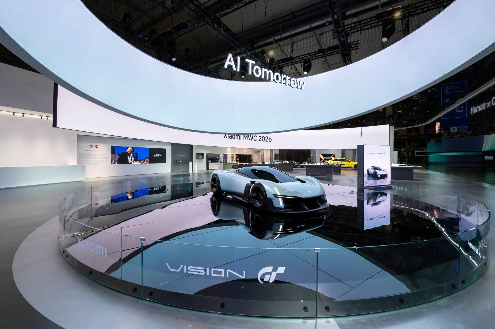
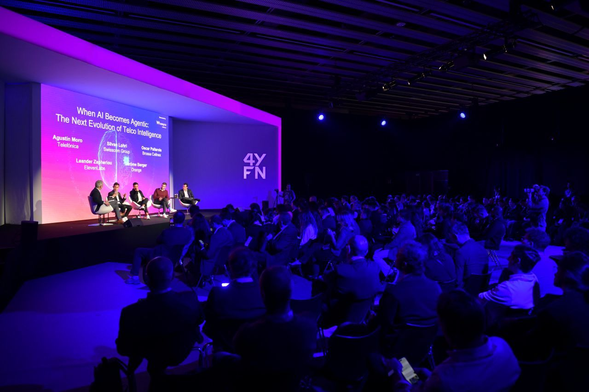
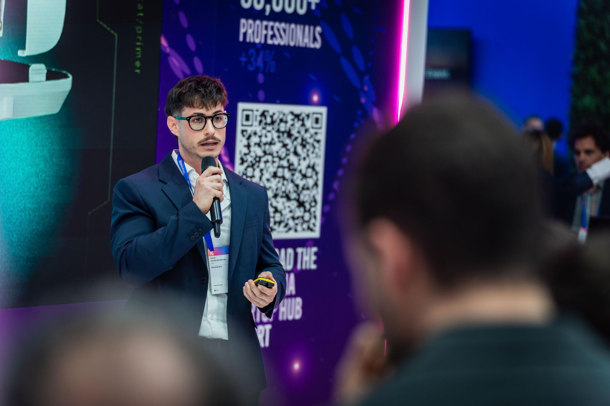
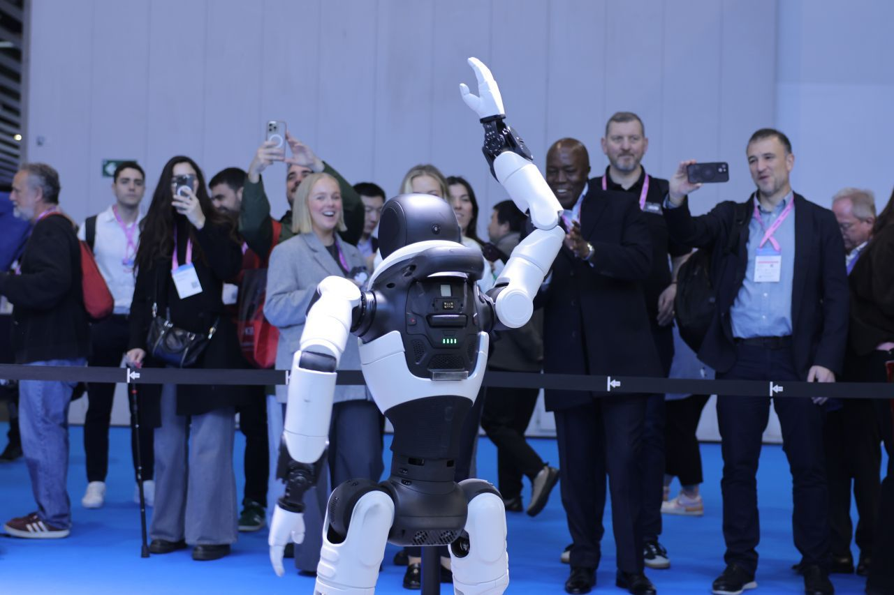
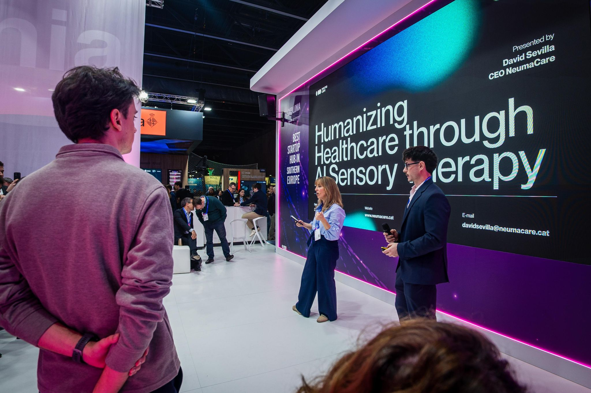

At NeumaCare, we are proud to have participated in 4YFN, part of the globally renowned Mobile World Congress. This milestone marks a significant step in our journey, offering us the opportunity to present our vision on an international stage and connect with the global innovation ecosystem.

A High-Impact Platform To Showcase Our Vision
During the event, we had the opportunity to pitch NeumaCare at the ACCIÓ stand, sharing our approach to transforming clinical environments through intelligent, multisensory systems. Presenting in this context allowed us to validate our narrative in front of a highly qualified audience and position our solution within the broader health tech landscape.
The quality of conversations and the feedback received were especially valuable — confirming both the relevance of our proposal and the increasing interest in solutions that integrate technology with patient-centred care.

Four Days Of Connections, Insight And Momentum
Over four intense days across 4YFN, MWC Barcelona, and related spaces such as Talent Arena, we engaged with founders, investors, and key ecosystem players. These interactions went beyond networking — they provided strategic insight, challenged our assumptions, and opened the door to potential collaborations.
Being immersed in such a high-density innovation environment reinforces the importance of speed, clarity, and execution when building in the health tech space.

Positioning NeumaCare In The Global Ecosystem
Participation in 4YFN is not just about presence — it is about positioning. Sharing our vision in a setting where global trends are defined allows us to align NeumaCare with the future of healthcare innovation.
At a time when we are entering our next growth phase, this exposure plays a key role in strengthening our visibility and connecting with the right partners, including health tech founders, strategic collaborators, and pre-seed/seed investors.


Energy, Inspiration And Strategic Clarity
Beyond the tangible outcomes, the experience has been deeply energising. Being surrounded by ambitious projects and forward-thinking professionals reinforces our motivation and sharpens our focus.
Moments like these provide not only visibility, but perspective — helping us return to execution with renewed clarity and ambition.
Acknowledgments And What Comes Next
We would like to thank everyone who contributed to making this experience possible, and especially those who took the time to connect, share insights, and explore potential synergies with us.
"At NeumaCare, we continue building with conviction: designing intelligent clinical environments that place human well-being at the centre."
— NeumaCare Team